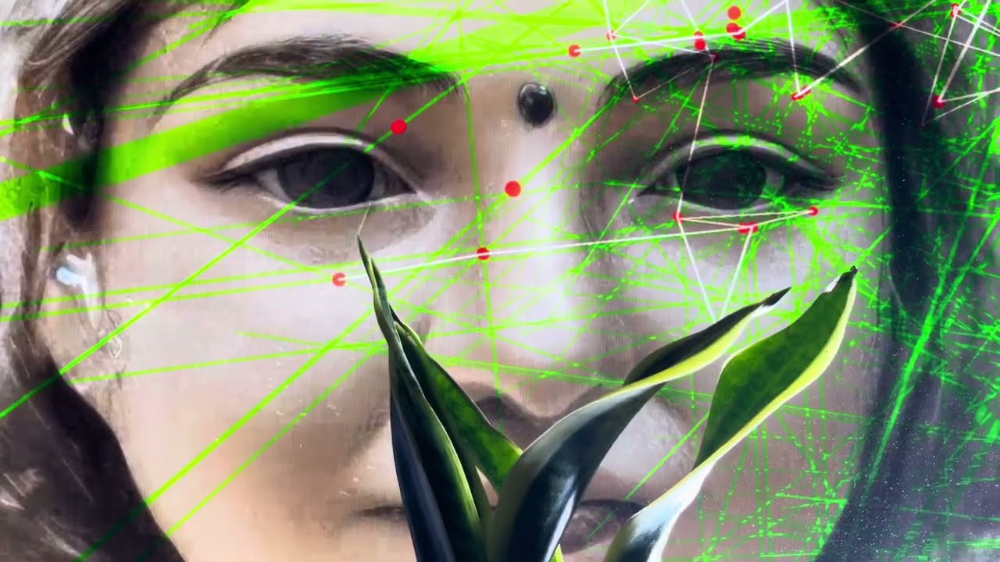
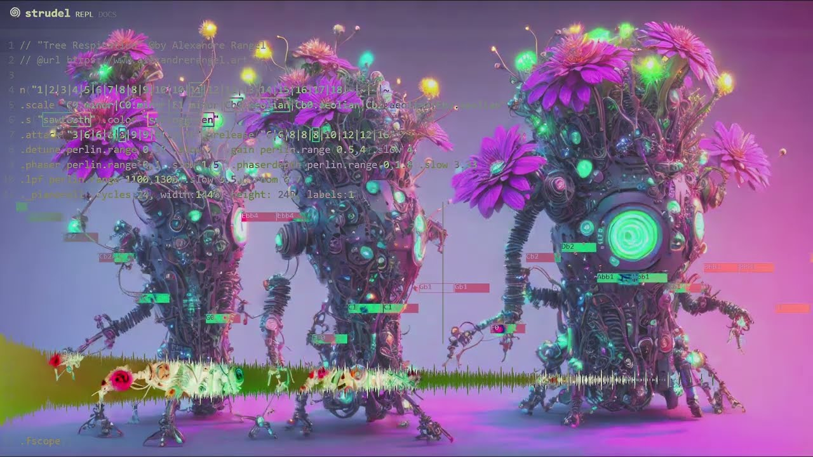
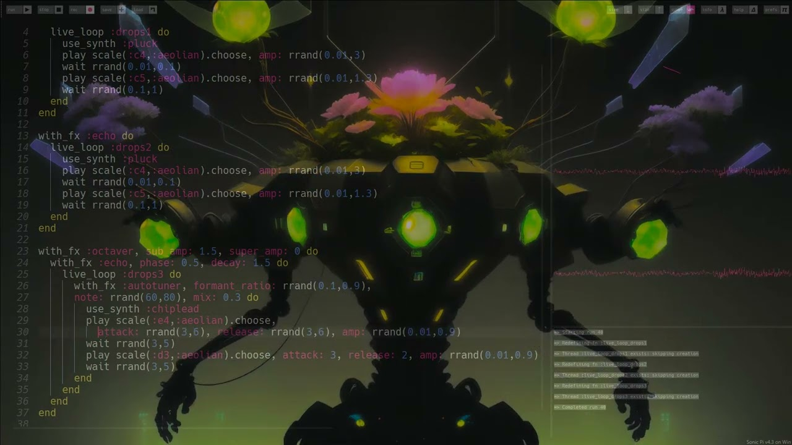
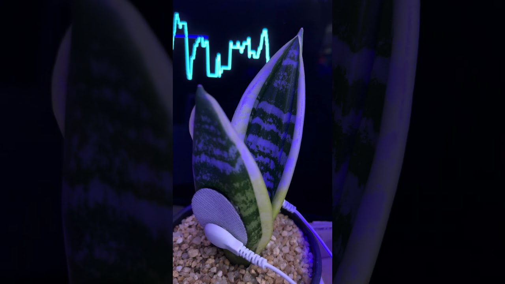
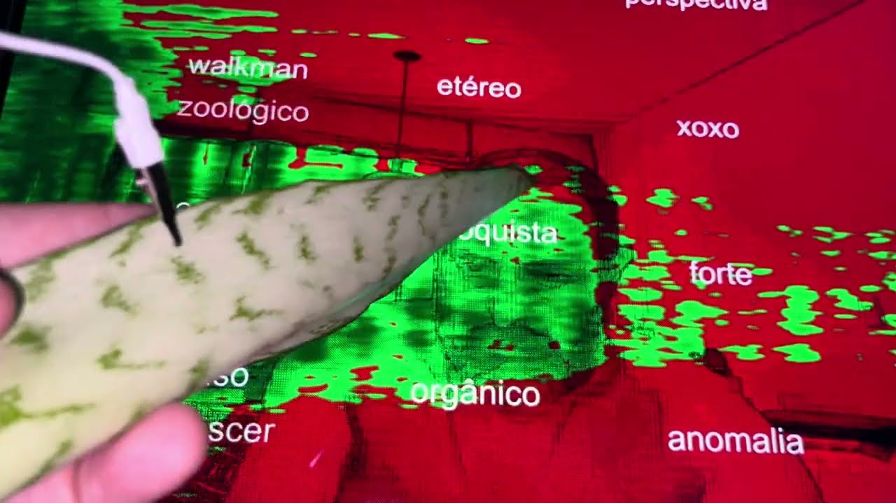
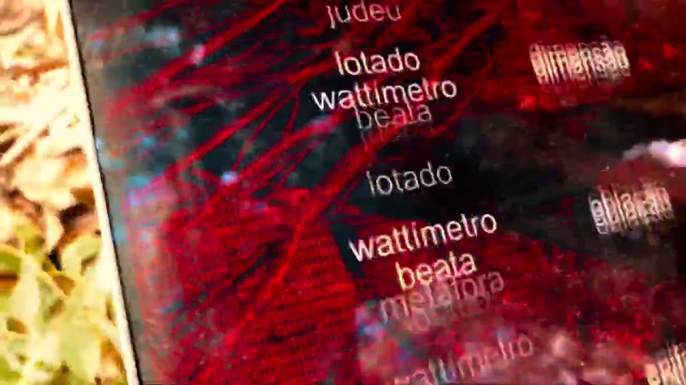

eco-sistemas: interferências eco-lógicas
eco-systems: eco-logical interferences
Alexandre Rangel, 2022-2025Um experimento artístico de comunicação inter-reinos (humano/vegetal).
Projeto de comunicação e performance poética audiovisual compartilhada entre plantas e seres humanos. A mediação eletrônica via programação de software transforma os impulsos elétricos galvânicos vegetais em partículas poéticas.
An inter-reign communicatiob (human/vegetal) artistic experiment.
Projeto de comunicação e performance poética audiovisual compartilhada entre plantas e seres humanos. A mediação eletrônica via programação de software transforma os impulsos elétricos galvânicos vegetais em partículas poéticas.





